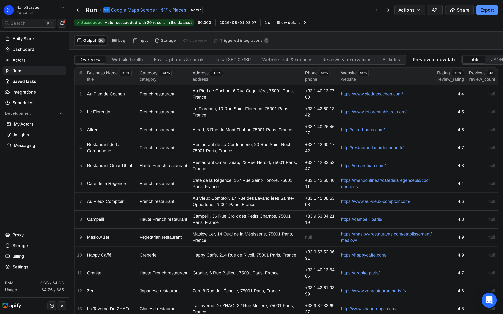
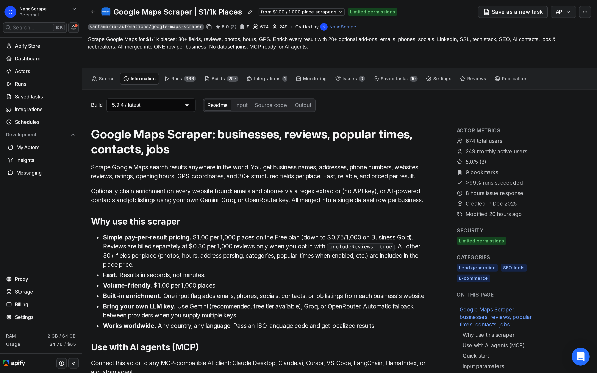
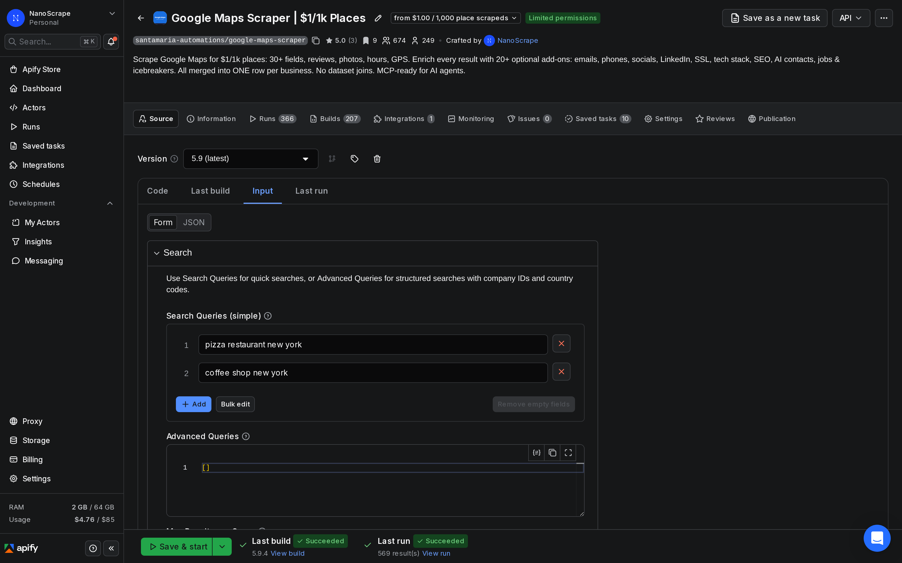
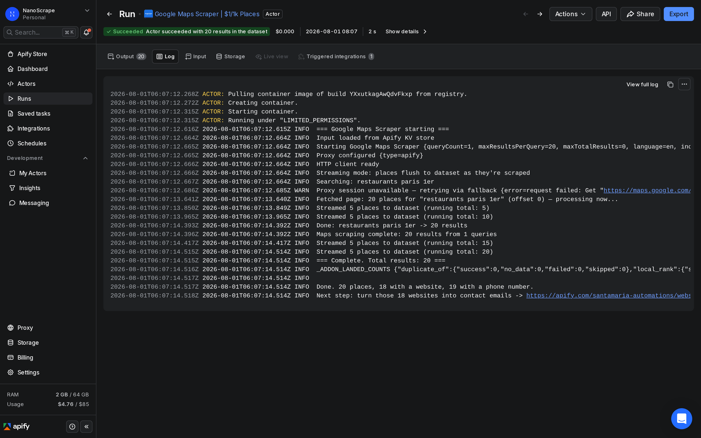

Comment scraper Google Maps
Saisissez une requete de recherche, cliquez sur Run, et en quelques secondes vous disposez d'un jeu de donnees structure avec 30+ champs par etablissement : nom, categorie, adresse complete, telephone, site web, note, nombre d'avis, horaires d'ouverture, coordonnees GPS, gamme de prix et bien plus encore. Sans code, sans configuration de proxy. Le NanoScrape Google Maps Scraper gere tout sur l'infrastructure d'Apify.

In this tutorial
Ce que vous obtenez
Chaque etablissement retourne plus de 30 champs structures. Voici un exemple de sortie abrege (le format reel d'un resultat) :
{
"title": "Le Bistrot Parisien",
"category": "Restaurant francais",
"address": "1 rue de Rivoli, 75001 Paris, France",
"complete_address": {
"street": "1 rue de Rivoli",
"city": "Paris",
"postal_code": "75001",
"country": "France"
},
"phone": "+33 1 00 00 00 00",
"website": "https://www.lebistrotparisien.fr/",
"review_rating": 4.5,
"review_count": 1823,
"status": "OPERATIONAL",
"price_range": "$$",
"open_hours": {
"Lundi": ["12:00-14:30", "19:00-22:30"],
"Vendredi": ["12:00-14:30", "19:00-23:00"]
},
"latitude": 48.8571,
"longitude": 2.3007,
"cid": "12345678901234567",
"scraped_at": "2026-08-01T10:00:00.000Z"
}Au-dela des informations de base, vous pouvez activer des options supplementaires : avis clients, histogrammes des heures de forte affluence, adresses e-mail, profils sociaux (Facebook, Instagram, LinkedIn, Twitter/X, TikTok, YouTube), inspection SSL, donnees WHOIS, detection de la pile technologique et extraction de contacts par IA. Chaque enrichissement est facture separement, uniquement quand vous l'activez.
includeReviews: true).Creer votre compte Apify gratuit
- Rendez-vous sur la page du Google Maps Scraper sur Apify.
- Cliquez sur Try for free. Inscrivez-vous avec Google ou par e-mail. Cela prend environ une minute.
- Vous arrivez dans Apify Console avec l'onglet Input de l'acteur ouvert et 5 $ de credit gratuit prets a utiliser.

Definir votre requete de recherche
L'onglet Input du scraper propose deux facons de definir ce que vous souhaitez rechercher. La plus simple est searchStrings : un tableau de requetes en texte libre, chacune envoyee directement a Google Maps.
{
"searchStrings": [
"restaurants a Paris 1er",
"dentistes a Lyon",
"avocats a Marseille"
],
"maxResultsPerQuery": 20
}Quelques conseils qui font une vraie difference :
- Incluez la localite dans la requete. Google Maps utilise l'ensemble de la chaine pour classer les resultats. "restaurants Lyon" donne de meilleurs resultats que "restaurants" avec un filtre de ville separe.
maxResultsPerQuerypeut aller jusqu'a 120, la limite de page de Google Maps pour une seule requete. Pour une couverture plus large, lancez plusieurs requetes ciblees.- Pour les regions non francophones, definissez
"language": "de"(oues,ja, etc.) pour obtenir noms d'etablissements et libelles de categories en langue locale. - Si vous souhaitez associer un identifiant de reference a chaque requete (pour relier les resultats a votre CRM), passez par le tableau
queriesplutot quesearchStringset ajoutez un champcompany_idpar requete.

queries plutot que searchStrings. Passez un company_id par requete et le scraper le copie dans chaque ligne de resultat, facilitant la jointure avec vos donnees source sans correspondance sur le nom ou l'adresse.Lancer le scraper
Cliquez sur Save and Run en bas de l'onglet Input. Vous arrivez sur la page de detail de l'execution. L'onglet Log diffuse la progression en temps reel, et l'onglet Dataset se remplit a mesure que chaque requete se termine.

La vitesse depend du nombre de requetes et de maxResultsPerQuery. Une execution typique de 3 requetes a 20 resultats chacune se termine en 10 a 20 secondes. Une execution de 10 requetes a 100 resultats chacune prend environ deux minutes.
Si une execution se termine mais que le dataset semble vide, cliquez sur l'onglet Dataset et verifiez que la vue n'est pas filtree. Vous pouvez aussi ouvrir l'onglet Log et chercher des lignes d'erreur. Les causes les plus courantes sont une requete de recherche qui ne retourne aucun resultat (localite mal orthographiee ou trop specifique) ou un probleme temporaire de proxy (relancer l'execution une fois suffit generalement).
Exporter vos donnees
Ouvrez l'onglet Dataset sur la page de detail de l'execution. Cliquez sur Export en haut a droite. Vous pouvez telecharger en :
- JSON pour une utilisation dans du code ou des API
- CSV pour Excel, Google Sheets ou LibreOffice
- Excel (.xlsx) pret a ouvrir sans etape d'importation
- JSON-L (un objet JSON par ligne) pour le streaming ou des pipelines Spark
Ajouter avis, emails et plus encore
Le scraping de base retourne les 30+ champs vus ci-dessus. Ces options supplementaires s'y ajoutent, chacune activee par un seul parametre dans le JSON d'entree.
Avis clients
Definissez "includeReviews": true et chaque etablissement recevra un tableau user_reviews avec le nom de l'auteur, la note en etoiles, la date de publication et le texte de l'avis. Options de tri : most_relevant, newest, highest_rating, lowest_rating. Pour filtrer par date, ajoutez "reviewsNewerThan": "2026-01-01" et le scraper s'arrete des qu'il depasse cette date limite.
includeReviews et scraper 500 etablissements avec 10 avis chacun, cela represente 5 000 avis, factures 0,30 $ supplementaires en plus du tarif de base.Histogramme des heures de forte affluence
Definissez "includePopularTimes": true et chaque resultat recevra un objet popular_times avec des scores de frequentation (0 a 100) par jour de la semaine et par heure. Ajoute environ 1,5 seconde par etablissement. Inclus dans le tarif de base de 1 $ pour 1 000 etablissements.
"popular_times": {
"Lundi": { "9": 38, "10": 52, "11": 70, "12": 81, "13": 79 },
"Samedi": { "10": 60, "11": 88, "12": 95, "13": 90 }
}Adresses e-mail et profils sociaux
Definissez "enableEmailExtraction": true et le scraper visitera chaque site web d'etablissement pour en extraire les adresses e-mail, numeros de telephone et URLs de profils sociaux (LinkedIn, Facebook, Instagram, Twitter/X, TikTok, YouTube) via un extracteur regex. Aucune cle API requise.
Extraction de contacts par IA
Definissez "enableContactExtraction": true et fournissez une geminiApiKey (niveau gratuit disponible sur Google AI Studio). Le scraper visite chaque site web d'etablissement et extrait des contacts structures : nom, poste, e-mail, telephone, departement. Les resultats sont fusionnes dans la meme ligne de dataset que les donnees Maps.
{
"searchStrings": ["entreprises IT a Paris"],
"maxResultsPerQuery": 20,
"enableContactExtraction": true,
"enableEmailExtraction": true,
"geminiApiKey": "votre-cle-gemini",
"waitForAddOns": true
}waitForAddOns: true (valeur par defaut). Vous obtenez un dataset propre avec tout en un, sans etape de jointure. Si vous definissez waitForAddOns: false, les enrichissements s'executent en arriere-plan et ecrivent dans des datasets separes que vous joignez vous-meme.Automatiser avec l'API
Chaque acteur sur Apify peut etre appele depuis votre code ou une plateforme d'automatisation. La solution la plus simple est un appel HTTP synchrone : envoyez votre JSON d'entree en POST et l'API attend la fin de l'execution avant de retourner le dataset.
curl -s -X POST \
"https://api.apify.com/v2/acts/santamaria-automations~google-maps-scraper/run-sync-get-dataset-items?token=VOTRE_TOKEN" \
-H "Content-Type: application/json" \
-d '{
"searchStrings": ["plombiers a Bordeaux"],
"maxResultsPerQuery": 50
}'La reponse est un tableau JSON d'objets d'etablissements, pret a etre envoye dans votre base de donnees, tableur ou API en aval. Obtenez votre token API personnel depuis Apify Console › Settings › Integrations.
Pour les executions longues (des milliers d'etablissements, nombreuses requetes), utilisez la variante asynchrone : envoyez un POST pour demarrer une execution, recuperez un runId, puis interrogez /v2/actor-runs/{runId}/dataset/items jusqu'a ce que le statut de l'execution soit SUCCEEDED. Le README de l'acteur propose des exemples de code en JavaScript, Python et cURL.
Utiliser via n8n, Make ou Zapier
Si vous preferez une plateforme d'automatisation sans code, les trois prennent en charge Apify nativement. Choisissez le noeud Apify ou l'action correspondante, entrez votre token API et l'ID de l'acteur santamaria-automations/google-maps-scraper, puis connectez la sortie a Google Sheets, Airtable, un webhook Slack ou n'importe quel autre noeud.
Connexion a un agent IA via MCP
Le scraper est egalement disponible via un serveur MCP. Collez cette URL dans votre client MCP (Claude Desktop, Cursor, VS Code, ou tout agent LangChain / LlamaIndex) :
https://mcp.apify.com?tools=santamaria-automations/google-maps-scraperUne fois connecte, vous pouvez interroger l'agent directement : "Trouve les dentistes pediatriques a Zurich et mets les resultats dans un tableau." L'agent decouvre automatiquement le schema d'entree et execute l'acteur pour vous.
Combien ca coute
- Etablissements (tarif de base) : 1,00 $ pour 1 000 etablissements sur le forfait gratuit. Jusqu'a 0,75 $ pour 1 000 sur Business Gold. Chaque etablissement inclut 30+ champs : heures de forte affluence, GPS, categorie, horaires, gamme de prix et toutes les autres donnees de base.
- Avis : 0,30 $ pour 1 000 avis, factures separement uniquement lorsque vous activez
includeReviews: true. Non inclus dans le tarif de base par etablissement. - Enrichissements (contacts, profils sociaux) : chaque add-on a son propre tarif par resultat, affiche sur les pages des acteurs individuels. Tous sont opt-in et passent proprement pour les etablissements sans site web, sans telephone ou sans URL sociale.
- Plateforme Apify : le forfait gratuit inclut 5 $ de credit chaque mois, suffisant pour environ 5 000 resultats d'etablissements. Vous ne payez que si vous depassez ce credit.
Estimation pratique : scraper 500 etablissements sur dix requetes prend environ 2 minutes et coute 0,50 $. Ajouter des avis a 10 par etablissement revient a 0,15 $ supplementaires. L'extraction de contacts par IA ajoute un petit cout par etablissement, selon le fournisseur LLM utilise (le niveau gratuit de Gemini gere la plupart des cas sans plan payant).
Cas d'usage frequents
Generation de leads
Recherchez des etablissements dans une categorie et une ville specifiques, activez l'extraction d'e-mails, et exportez vers votre CRM ou outil d'e-mailing a froid. Filtrez par review_count, review_rating ou status: OPERATIONAL pour vous concentrer sur les etablissements actifs.
Etude de marche
Cartographiez tous vos concurrents dans une region. Le champ local_rank (automatique quand deux etablissements ou plus partagent la meme categorie et ville) indique la position de chaque etablissement dans sa cohorte par nombre d'avis, ainsi que l'ecart qui le separe de la position 3.
SEO et surveillance de la reputation
Extrayez les avis selon un planning regulier avec reviewsNewerThan regle sur la date de la semaine precedente. Si le bloc review_intel_math (automatique lorsque includeReviews est active) indique rating_trend: "declining", signalez le compte pour examen.
Enrichissement de donnees pour des listes existantes
Utilisez le tableau queries plutot que searchStrings. Passez votre company_id interne avec chaque requete. Le scraper le copie dans chaque ligne de resultat, ce qui facilite la jointure des donnees enrichies avec votre liste source sans correspondance sur le nom ou l'adresse.
FAQ
Dois-je ecrire du code pour scraper Google Maps ?
Non. Apify Console propose un editeur d'entree base sur des formulaires. Saisissez vos requetes de recherche, cliquez sur Save and Run, et telechargez les resultats. Le code n'est necessaire que si vous souhaitez appeler l'acteur depuis un pipeline d'automatisation ou votre propre application.
Combien de resultats peut-on obtenir par requete ?
Jusqu'a 120 par requete, ce qui correspond a la limite de page de Google Maps pour une seule recherche. Pour une couverture plus large, decoupez votre recherche par quartier, sous-categorie ou arrondissement et lancez chacune comme une requete separee. Par exemple, au lieu de "restaurants a Paris", essayez "restaurants dans le Marais", "restaurants a Montmartre" et "restaurants a Saint-Germain-des-Pres".
Les avis sont-ils inclus dans le prix de base ?
Non. Les avis sont factures separement a 0,30 $ pour 1 000 avis, uniquement lorsque vous activez explicitement includeReviews: true. Tout le reste, y compris les heures de forte affluence, les coordonnees GPS, les horaires d'ouverture, les URLs de photos, la gamme de prix et les donnees de categorie, est inclus dans le tarif de base de 1 $ pour 1 000 etablissements.
Peut-on scraper des etablissements dans le monde entier ou seulement en France ?
Le scraper fonctionne dans tous les pays et langues couverts par Google Maps. Incluez le pays ou la ville dans votre requete de recherche et definissez le parametre language avec le code ISO 639-1 correspondant (de pour l'allemand, en pour l'anglais, ja pour le japonais, etc.) pour obtenir des resultats localises.
A quelle frequence les donnees sont-elles mises a jour ?
Chaque scraping interroge l'API Google Maps en direct au moment de l'execution. Il n'existe aucune donnee en cache ni instantane stocke. Ce que Google affiche au moment ou vous lancez l'acteur est exactement ce que vous obtenez.
Peut-on obtenir des adresses e-mail avec les donnees Google Maps ?
Oui. Activez enableEmailExtraction: true pour un extracteur base sur des expressions regulieres qui recupere e-mails, numeros de telephone et URLs de profils sociaux depuis le site web de chaque etablissement, sans cle API requise. Pour des contacts structures (nom, poste, e-mail), activez egalement enableContactExtraction: true et fournissez une cle API Gemini ou Groq. Les resultats sont fusionnes dans la meme ligne de dataset que les donnees Maps.
Le scraping de Google Maps est-il legal ?
L'extraction de donnees publiquement visibles depuis des sites web est generalement autorisee dans la plupart des juridictions. Le RGPD et les lois locales sur la vie privee s'appliquent a toutes les donnees personnelles que vous collectez et stockez. Consultez un conseiller juridique pour votre situation specifique.
Peut-on ignorer des etablissements deja scrapes lors d'executions repetees ?
Oui. Chaque etablissement Google Maps possede un champ cid stable qui ne change pas meme si l'etablissement change de nom ou d'adresse. Passez un tableau de CIDs dans excludeCids et le scraper les ignorera. Un schema courant dans les workflows automatises : lisez la colonne CID de votre export precedent, renvoyez le tableau, et seuls les nouveaux etablissements apparaitront dans la sortie.
Related resources
- Page de l'acteur Google Maps Scraper: Specifications completes, paliers de tarification et comparaison avec les alternatives.
- Google Maps Scraper sur Apify: Documentation complete, tous les parametres d'entree et la reference complete des champs de sortie.
- How to Scrape Google Maps (English): Version anglaise de ce tutoriel, avec les memes etapes et exemples.
- Google Maps Reviews Scraper: Guide dedie a l'extraction et au filtrage des avis clients depuis Google Maps.
- Scraper Google Maps avec n8n: Guide pas-a-pas pour envoyer les resultats directement dans Google Sheets via un workflow n8n gratuit.